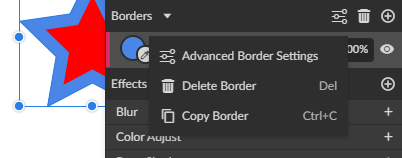
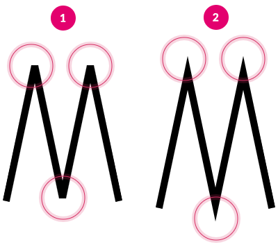
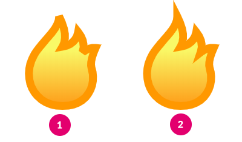
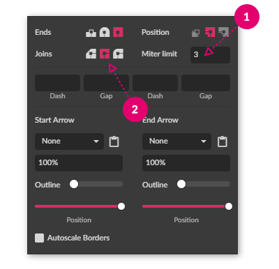
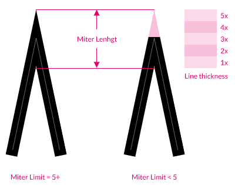
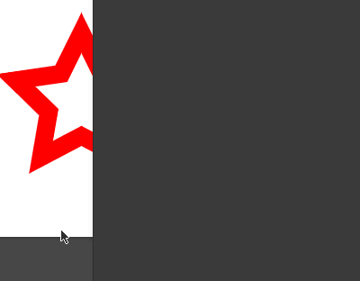

Borders are the outlines of your shapes, and can be referred to as strokes, outlines, or even brushes. In Gravit Designer, you can use multiple borders on one object, place them inside or outside of the object, and have various fill and blend options applied to them.
Here are some examples of borders in Gravit Designer:


(1) Black border
(2) No border
(3) A border on an open (not closed) path
(4) Layered (Multiple) borders
(5) Layered (Multiple) borders with blending mode
(6) Dashed border
(7) A dashed border with an end arrow
(8) A border with both start and end arrows
Here are some of the options for Borders:

(1) Borders can have all the options of fills with the exception of noise
(2) Border width (thickness) – a large border will obscure a portion of an object’s fill
(3) Blending mode (for current border) – borders can be layered on top of one another.
(4) Opacity – for the current border
(5) Visibility toggle – hide/show the current border
Advanced Border settings

- In the Inspector panel, select a border.
The clickable area is highlighted in light gray in the screenshot. The end of the border selection will highlight to show it is selected (1). - Click the Advanced Border Settings icon (2).
You can also access the Advanced Border Settings in the contextual menu of the border settings row:

Just like with fills, it’s possible to copy a border and paste it, on the same or on a different element. This can be done using Ctrl/Cmd+C – Ctrl/Cmd+V, or by using the context menu with a right-click on the border.
Then you can simply select any vector object and use Paste +
Border drawing properties
The Advanced stroke settings pop-up contains three border properties controls.
Note: End options affect both ends of the border, even if you only have one endpoint selected.

(1) Ends – how the border behaves at the end of a path
(a) Butt – ends directly at the anchor point. Wide borders will show a square end.
(b) Round – end as if a circle was drawn around the anchor point, the same width as the border.
(c) Square (default) – end as if a square was drawn around the anchor point, the same width as the border.
(2) Joins – how the border behaves at sharp (straight) corners in a path
(a) Bevel – corners are truncated or beveled
(b) Miter (default) – corner forms a sharp peak
(c) Round – corners are rounded
(3) Position – how a border is shown in relation to a path (and interacts with any fill)
(a) Inside (default) – the border is drawn inside the path, on top of any fill. (this option is disabled for open paths and lines)
(b) Center – the border is drawn centered on the path, partly overlapping any fill.
(c) Outside – the border is drawn outside the path, not over any fill (this option is disabled for open paths and lines).
Note that closed objects, like Rectangle and Ellipse, are created with a border set to Inside, with Miter joins and Center position by default, while an open path is set to Center by default.
Miter limit
The Miter limit setting allows you to control how the sharp (Miter) corners are drawn. After reaching the specified limit, sharp corners will become beveled (cut off). At lower Miter limit values, the corners will become beveled sooner. If you want to keep sharp corners for even smaller angles, you should increase the Miter limit value until you reach the desired result.


The illustration above shows how different miter limits affect the same path. The first path (1) has a Miter limit set to 3, hence the beveled corners. The second path (2) has a Miter limit set to 5 that allows for the sharp corners to be visible.

Miter limit can be changed in Advanced Border properties (1). Please note that only the Miter join type (2) has the Miter limit property available.
Technically the Miter limit value represents the number of times the Line thickness will fit the Miter Length before the corner will be cut. This illustration provides a visual example:

Dashed borders
The Advanced stroke settings pop-up contains a dash array generator that allows you to make various dashed or dotted borders.
To make a simple dashed border use the first two boxes:
- use the first Dash box for the length of the dash
- use the first Gap box for the length of the gap (if left empty will use the Dash value for the Gap as well)
- leave the last two boxes blank for a simple dashed (or dotted) pattern

To make a dotted line, first set the end type to round, and then set the dash value to 0. Now adjust the gap value to change the distance between dots.
You can also use the last two boxes to get a two-part pattern, for example, a dashed-dotted line.
Each Dash and Gap pair define half of the pattern.

Border Arrows (line ends)
You can add arrows to the ends of your Borders. This works for closed or open paths.

You can choose between these predefined arrowheads:

None (1), Circle (2), Bullet (3), Diamond (4), Line (5), Double Line (6), Arrow (7), Fat Arrow (8), Line Arrow (9), Double Line Arrow (10), Arrow Line Bar (11), Arrow Pointer (12), Custom (see below)
If provided presets are not enough, you can use any shape as a custom end arrow. Here is how:

- Create the arrow-tip shape pointing upwards.
Note: Only the overall shape will be used, like a silhouette. No gradient fills, etc. - Select the shape and copy it to the clipboard.
- Select a border to customize.
- Use the Paste icon in Advanced stroke settings.
- Adjust the options as needed
Arrow options

(1) Size – the size of the arrow as a percentage of the original shape multiplied by the width of the border.
When the border width is 1 and the size is set to 100%, the arrow will be the same size as the original.
(2) Outline – use the custom shape outline rather than a filled shape. Uses the border width.
(3) Position – slider at halfway means the arrow shape is centered over the endpoint of the path. Either end of the slider moves the arrow along the path. The position is calculated using the bounding box of the arrow shape.
Autoscale Borders

Autoscale Borders – change the width (thickness) of the borders appropriately if the shape is resized.
Without this option ticked, borders will remain the same width (thickness) when the shape is resized (This option is most commonly used in UI design)

With this option ticked, borders will change the width (thickness) appropriately when the shape is resized

You can temporarily override this behavior in Transform panel settings.
Stacked borders
You can add unlimited borders on any vector object. You can rearrange them by simply dragging them up/down to achieve desired results. Keep in mind that borders are stacked on top of each other, so it is a good idea to make them different widths (or change the way they are placed – inside, centered, or outside)
